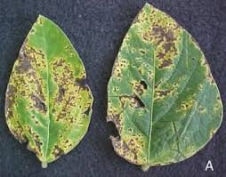
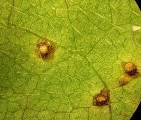

Cultura: Soja;
Doença: Crestramento Bacteriano;
Nome científico: Pseudomonas savastanoi pv. glycinea;
Etiologia: a bacteria penetra por ferimentos ou pelo estômato e pode se originar de sementes infectadas e restos de culturas anteriores e necessita de umidade na superfície da folha para se desenvolver;
Tipo: bacteriana;
Sintomas: a doença pode ser encontrada nas hastes, pecíolos e vagens, mas principalmente nas folhas, nas quais se formam pequenas manchas translúcidas que com o tempo se juntam e decompõem os tecidos;
Controle: uso de sementes sadias, aração profunda para que não seja infectada com vestígios dessa doença da plantação anterior após sua colheita, rotação de culturas e uso de variedades resistentes;
Temperatura: 20 a 26º;
Umidade relativa do ar: umidade elevada;
Período de molhamento: orvalho abundante;
Card title

Cultura: Soja;
Doença: Pústula Bacteriana;
Nome científico: Xanthomonas axonopodis pv. glycines;
Etiologia: trasmitido pelas sementes e restos de culturas infectadas, a bacteria por abertura da planta ou por ferimento mas também por transporte pelo vento e pela chuva;
Tipo: bacteriana;
Sintomas: se inicia com pequenas manchas pardas arredondadas que aumentam de tamanho de acordo com a evolução da doença, na parte inferior da folha pode ocorrer uma elevação esbranquiçada na mancha e não apresentam brilho dando aparência de áspera;
Controle: utilização de cultivares resistentes e bom preparo do solo para evitar infecção de culturas anteriores;
Temperatura: acima de 28º;
Umidade relativa do ar: elevada;